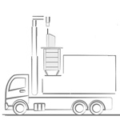
Automatic systems
Bilateral
Compatible with fully automatic bilateral collection systems.
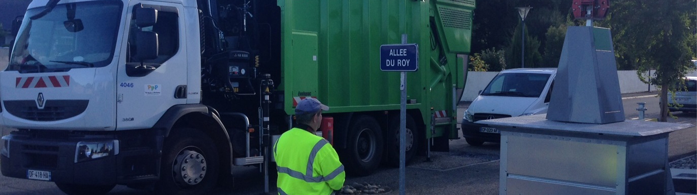
Sotkon's vision for metal underground containers: a robust system for top loading vehicles with high mechanical strength.
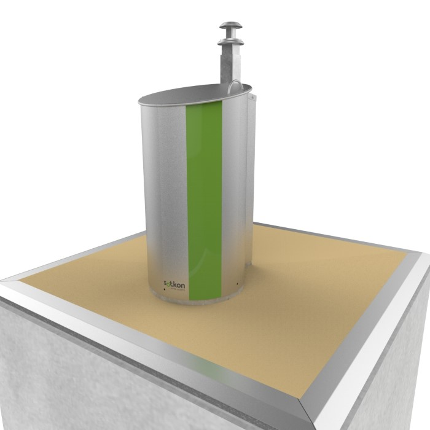
Product overview
Apto combines a high-strength metal container with an underground installation, designed for top loading collection vehicles.
The pedestrian platform and container are joined with a strong fixation system and move together by remote control. Waste is unloaded when the bottom of the container opens on top of the collection truck.
System components
Sotkon concrete bunkers are unitary, allowing underground waste containers to be placed individually or in groups with several installation configurations.
The materials used to manufacture the bunker prevent water from entering, supporting reliable underground installation.
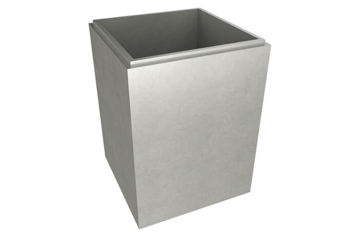
Concrete bunkerApto containers have capacities of 3m?, 4m? and 5m? and are made of galvanized steel for exceptional mechanical resistance, even under intensive use.
The lifting hardware is hot-dip galvanized steel and tested for the required load. Bottom opening doors are welded to prevent fluid leakage.
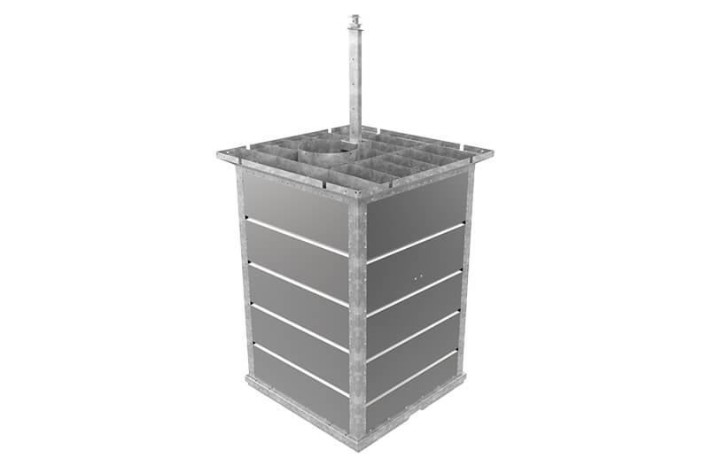
Container mushroom hookSotkon containers were designed for easy adaptability to top collection trucks and existing hook systems, including fully automatic bilateral systems.
The pedestrian platform and container are joined with a strong and reliable fixation system, moving together by remote control. Waste unloads when the bottom of the container opens above the collection truck.
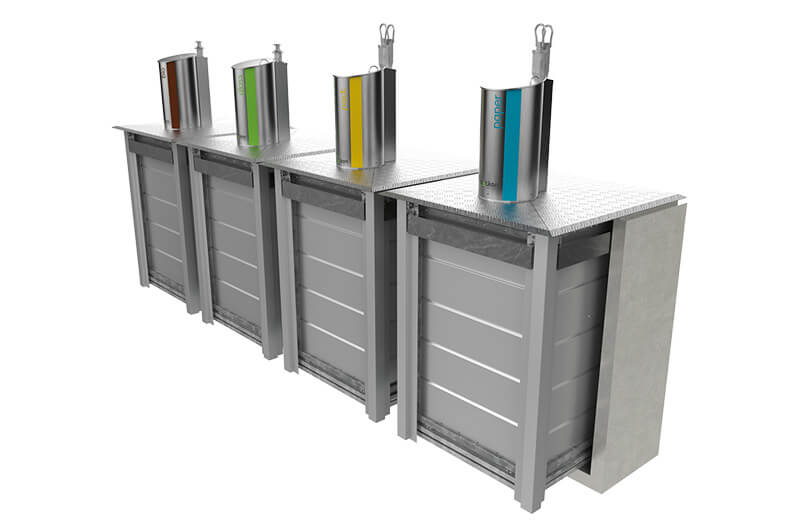
Sliced hooksThe Apto pedestrian platform is made of galvanized sheet steel, properly treated to resist corrosion in aggressive environments.
To facilitate integration with the surface, the pedestrian platform can use classic metal finishing or other finish options.
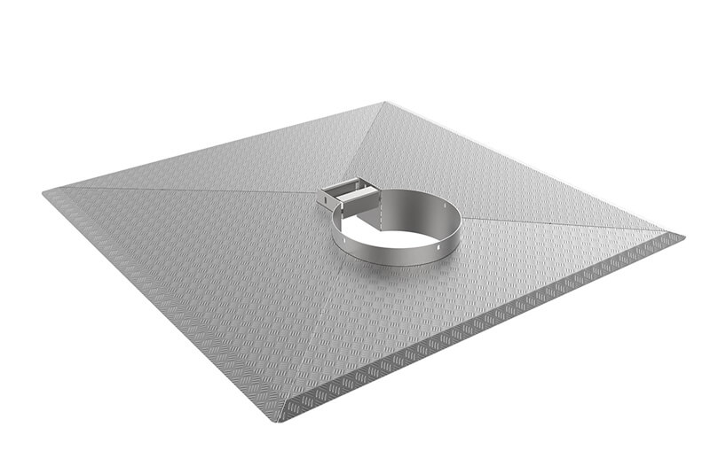
Pedestrian platformThinking about safe operation, Sotkon developed two different safety platform models: a double-door platform elevated by gas springs and a unitary platform elevated by counterweights.
In both models the platform rises to street level when the container is removed, covering the entire free space inside the bunker.
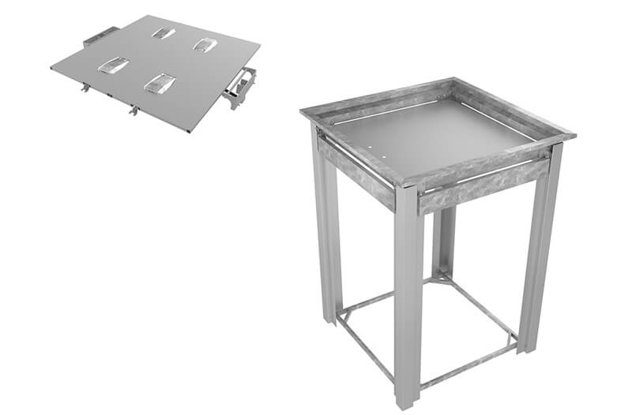
Safety platformAll Sotkon intake columns are designed with an attractive, innovative and thoughtful design and can be considered pieces of urban furniture.
They are made of stainless steel to preserve their appearance and maintain resistance under demanding circumstances.
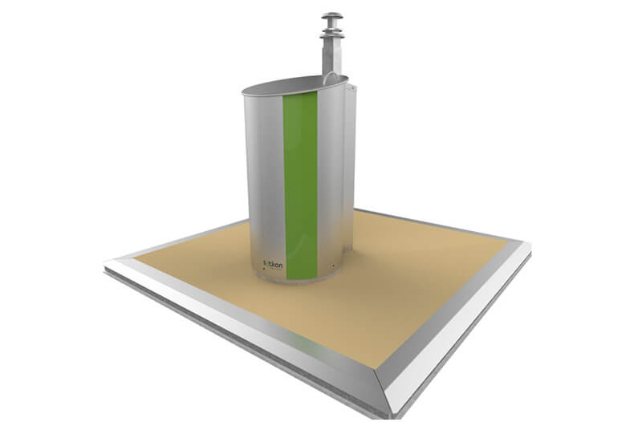
Intake bin pedestrian platformSOTKIS intelligent waste management systems increase collection efficiency.
SOTKIS Level manages filling levels to optimize routes, while SOTKIS Access supports PAYT concepts by charging users according to the number of deposits.
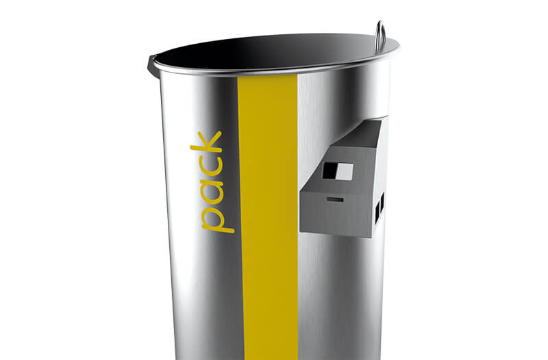
Ikon for smart citiesThe APTO waste system can be adapted to different types of automatic collection.
An adjustable lid option is available for inclinations of up to 8%, helping the system fit real site conditions.
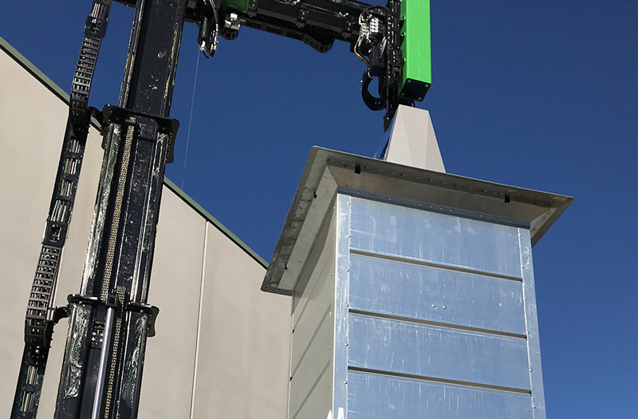
Bilateral collection optionTechnical dimensions
Preview 3m?, 4m? and 5m? dimensions without making the page taller.
| Capacity | A | B | C | D |
|---|---|---|---|---|
| 3m?/4m? | 1750 | 2750 | 1950 | 1950 |
| 5m? | 2600 | 3600 | 1950 | 1950 |
Units in mm, approximate values. These measures do not apply for construction purposes.
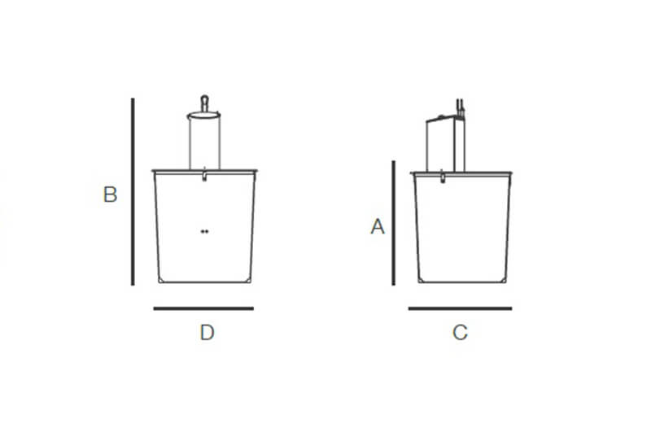